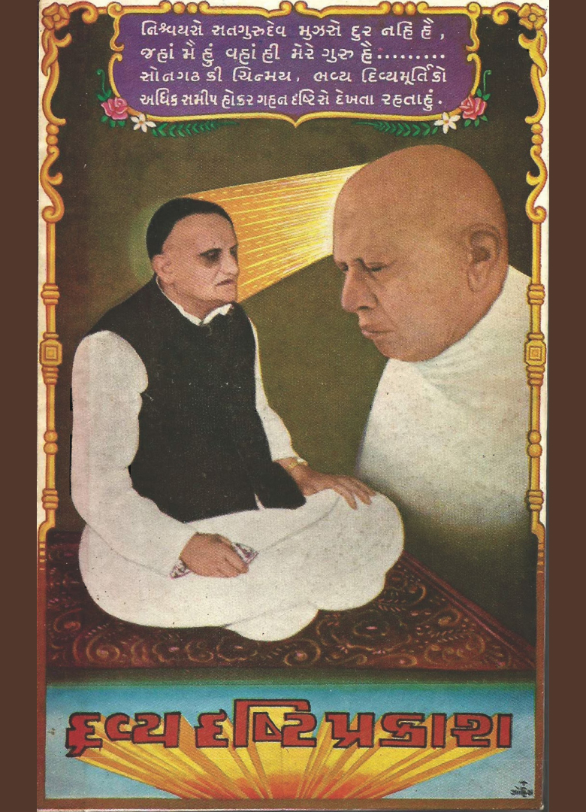

Shri Dravya Drushti Prakash
- 40 published
- 6 on YouTube only
- 28 recorded, not published
- 2 no recording
Patra 250 · 4 sittings · 1999
| Part | Date | Reference | Length | Recording |
|---|---|---|---|---|
| 2 | 24 March 1999 | 58 min | On YouTube only | |
| 3 | 25 March 1999 | 59 min | On YouTube only | |
| 4 | 27 March 1999 · 1 of 2 | Recorded, not published | ||
| 27 March 1999 · 2 of 2 | Recorded, not published |
Patra 250 · 3 sittings · 1999
| Part | Date | Reference | Length | Recording |
|---|---|---|---|---|
| 1 | 30 July 1999 · 1 of 3 | Patra 250 | 56 min | Video |
| 2 | 30 July 1999 · 2 of 3 | Patra 250 | 57 min | On YouTube only |
| 3 | 30 July 1999 · 3 of 3 | 56 min | Video |
Patra 20 · 6 sittings · 2000
| Part | Date | Reference | Length | Recording |
|---|---|---|---|---|
| 1 | 15 July 2000 · 1 of 2 | 84 min | Video | |
| 1 | 15 July 2000 · 2 of 2 | Patra 20 | 89 min | Video |
| 2 | 16 July 2000 · 1 of 4 | 67 min | Video | |
| 2 | 16 July 2000 · 2 of 4 | Patra 20 | 72 min | Video |
| 3 | 16 July 2000 · 3 of 4 | Patra 20 | 43 min | Video |
| 4 | 16 July 2000 · 4 of 4 | 32 min | Video |
Patra 17 · 2 sittings · 2001
| Part | Date | Reference | Length | Recording |
|---|---|---|---|---|
| 4 March 2001 · 1 of 2 | Recorded, not published | |||
| 4 March 2001 · 2 of 2 | Recorded, not published |
Patra 250 · 3 sittings · 2001
| Part | Date | Reference | Length | Recording |
|---|---|---|---|---|
| 1 | 7 March 2001 · 1 of 3 | Recorded, not published | ||
| 2 | 7 March 2001 · 2 of 3 | Recorded, not published | ||
| 3 | 7 March 2001 · 3 of 3 | Recorded, not published |
Patra 19 · 5 sittings · 2002
| Part | Date | Reference | Length | Recording |
|---|---|---|---|---|
| 23 January 2002 | Patra 19 | Video | ||
| 2 | 24 January 2002 | Patra 19 | 45 min | Video |
| 3 | 25 January 2002 · 1 of 2 | Patra 19 | 55 min | Video |
| 25 January 2002 · 2 of 2 | Patra 19 | No recording | ||
| 26 January 2002 | Recorded, not published |
Patra 22 · 6 sittings · 2002
| Part | Date | Reference | Length | Recording |
|---|---|---|---|---|
| 1 | 6 February 2002 · 1 of 2 | Patra 22 | 58 min | Video · transcript |
| 6 February 2002 · 2 of 2 | Patra 22 | Video | ||
| 2 | 8 February 2002 | Patra 22 | 56 min | Video · transcript |
| 3 | 12 February 2002 | Patra 22 | 50 min | On YouTube only · transcript |
| 4 | 13 February 2002 | Patra 22 | 56 min | Video · transcript |
| 5 | 14 February 2002 | Patra 22 | 51 min | Video · transcript |
Patra 28 · 7 sittings · 2002
| Part | Date | Reference | Length | Recording |
|---|---|---|---|---|
| 1 | 18 February 2002 | Patra 28 | 39 min | Video |
| 19 February 2002 | Recorded, not published | |||
| 21 February 2002 | Patra 28 | Video | ||
| 5 | 22 February 2002 | Patra 28 | 31 min | Video |
| 24 February 2002 | Recorded, not published | |||
| 7 | 25 February 2002 | Patra 28 | 54 min | Video |
| 8 | 26 February 2002 | Patra 28 | 58 min | Video |
Patra 17 · 6 sittings · 2002
| Part | Date | Reference | Length | Recording |
|---|---|---|---|---|
| 1 | 29 March 2002 · 1 of 2 | Patra 17 | 60 min | Video · transcript |
| 2 | 29 March 2002 · 2 of 2 | Patra 17 | 58 min | Video · transcript |
| 3 | 30 March 2002 · 1 of 3 | Patra 17 | 62 min | Video · transcript |
| 4 | 30 March 2002 · 2 of 3 | Patra 17 | 62 min | Video · transcript |
| 4 | 30 March 2002 · 3 of 3 | Patra 17 | No recording · transcript | |
| 5 | 31 March 2002 | Patra 17 | 64 min | Video |
Patra 39 · 4 sittings · 2002
| Part | Date | Reference | Length | Recording |
|---|---|---|---|---|
| 1 | 26 June 2002 | Patra 39 | 13 min | Video |
| 2 | 27 June 2002 | Patra 39 | 52 min | Video |
| 28 June 2002 | Patra 39 | Video | ||
| 29 June 2002 | Recorded, not published |
Bol 250 · 6 sittings · 2002
| Part | Date | Reference | Length | Recording |
|---|---|---|---|---|
| 1 | 10 July 2002 · 1 of 2 | Bol 250 | 52 min | Video |
| 1 | 10 July 2002 · 2 of 2 | Patra 250 | 52 min | Video |
| 2 | 11 July 2002 · 1 of 4 | Bol 250 | 60 min | Video |
| 3 | 11 July 2002 · 2 of 4 | Patra 250 | 62 min | Video |
| 2 | 11 July 2002 · 3 of 4 | Patra 250 | 59 min | Video |
| 11 July 2002 · 4 of 4 | Bol 250 | Video |
Other sittings · 24 sittings
| Part | Date | Reference | Length | Recording |
|---|---|---|---|---|
| 3 | 2 December 1998 | Recorded, not published | ||
| 30 April 1999 | Patra 333, 339, 30 | 36 min | On YouTube only | |
| 1 May 1999 | Bol 180, 1 | 42 min | On YouTube only | |
| 26 October 1999 | Patra 178, 26 | 61 min | Video | |
| 1 | 13 January 2000 | 58 min | Recorded, not published | |
| 14 January 2000 | 58 min | Recorded, not published | ||
| 17 July 2000 | Patra 28, 17 | 46 min | Video | |
| 1 | 13 September 2000 | Recorded, not published | ||
| 6 November 2000 | Patra 144, 146, 147, 6 | 30 min | Video | |
| 29 December 2000 | Recorded, not published | |||
| 10 March 2001 | Recorded, not published | |||
| 14 March 2001 | Recorded, not published | |||
| 15 March 2001 | Recorded, not published | |||
| 16 March 2001 | Recorded, not published | |||
| 4 | 17 March 2001 | Recorded, not published | ||
| 5 | 19 March 2001 | Recorded, not published | ||
| 6 | 20 March 2001 | Recorded, not published | ||
| 8 April 2001 · 1 of 2 | Recorded, not published | |||
| 8 April 2001 · 2 of 2 | Recorded, not published | |||
| 9 April 2001 | Recorded, not published | |||
| 10 April 2001 | Recorded, not published | |||
| 18 January 2002 | Recorded, not published | |||
| 6 | 26 March 2002 | Patra 250 | 40 min | Video |
| 4 August 2002 | Patra 223 | 56 min | Video |